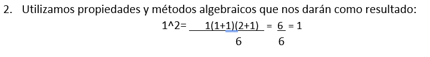
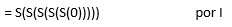

Ejemplos
Ejemplo 1
Si tuviéramos una baraja española y A es el suceso de “sacar un as” y B "sacar un rey". ¿Qué cantidad de formas posibles existen de sacar un as o un rey?
Solución:
-
Paso 1Como sabemos existen cuatro ases y cuatro reyes, el suceso de A se puede representar de 4 maneras diferentes y lo mismo ocurre con el B.
-
Paso 2Como los sucesos no pueden producirse de forma simultánea, ya que o se saca as o se saca rey.
-
Paso 3El total de maneras sería:
4 + 4 = 8
Ejemplo 2
Un alumno que estudia lenguajes de programación ha comprado 4 libros por cada uno de los siguientes lenguajes: C, Fortran y Cobol. Desea saber cuántas posibles combinaciones de ellos pueden hacerse.
Solución:
-
Paso 1Como sabemos el alumno tiene 3 libros y puede hacer combinaciones de 4 diferentes libros
-
Paso 2Por lo tanto, podemos multiplicar 3 veces 4. Esto daría como resultado el número de libros diferentes que combina cada vez que los toma.
-
Paso 3El total combinaciones sería:
4 + 4 + 4 = 12 libros diferentes alternados.
Ejemplo 3
Solución:
Si tuviéramos una baraja española con 12 cartas por palo y considerando que A es el suceso "sacar un as" y B "sacar una espada". ¿De cuántas maneras se podría sacar un as o una espada?
-
Paso 1Como existen cuatro ases en la baraja y doce cartas del palo espadas, podríamos pensar que la respuesta válida es la siguiente:
4+12=16 formas posibles de sacar una as o una espada, pero el razonamiento no es correcto. -
Paso 2Los dos sucesos A y B no son excluyentes ya que se puede obtener en la extracción el as de espadas.
-
Paso 3Por ello es necesario realizar la siguiente resta:
4+12-1 = 15
Ejemplo 4
Sabiendo que la información de una computadora es almacenada en la memoria principal en lo que se conoce como celdas o posiciones de memoria, de forma que a cada posición le es asignada una dirección compuesta de ocho símbolos. Cada uno de ellos es un dígito binario 0 o 1 denominado bit.
Solución:
-
Paso 1El conjunto de ocho bits se conoce como byte. El número total de bytes diferentes que se puede formar se obtiene aplicando la regla del producto considerando que en cada posición sólo puede existir dos alternativas: el 0 o el 1.
-
Paso 2Se obtiene así:
2*2*2*2*2*2*2*2* = 2^8 = 256
posiciones de memoria distintas. -
Paso 3Otros ordenadores emplean direcciones de dos bytes. En estos casos las posiciones se conocen como direccionales y existirían alrededor de:
2^8*2^8 = 256*256 = 65 536
posiciones de memoria distintas.
Ejemplo 5
Si A = {1, 2, 3}:
Solución:
-
Paso 1Las combinaciones monarias (de un solo elemento) serían por ejemplo: 3,2,1.
-
Paso 2Binarias (de dos elementos) serían: 12, 13 , 23.
-
Paso 3De orden 3 únicamente existe la agrupación: 123.
Ejemplo 6
Si fuera A = {1, 2, 3, 4, 5}, las combinaciones ternarias serían:
Solución:
-
Paso 1
-
Paso 2
-
Paso 3El resultado es: 10
Ejemplo 7
Solución:
-
Paso 1
-
Paso 2
Ejemplo 8
Sea calcular 3+2 con los axiomas de Peano. Es decir, S(S(S(0))) +S(S(0)):
Solución:
-
Paso 1

-
Paso 2
-
Paso 3
Ejemplo 9
Demostrar que para todo n es 2(n+2)<=(n+2)^2:
Solución:
-
Paso 1
-
Paso 2
-
Paso 3Dado que se ha demostrado la base inductiva y el paso inductivo, está permitido concluir que para todo n es 2(n+2)<=((n+2)^2).
Ejemplo 10
Como premisa X es una persona. Si X es una persona, entonces todas las siguientes personas son descendientes de X.
Solución:
-
Paso 1Todos los hijos de X son descendientes de X.
-
Paso 2Si y es un descendiente de x, entonces todos los descendientes de y son descendientes de X. No hay nadie más que sea descendiente de X.
-
Paso 3En este ejemplo, existe una premisa para decir de forma repetida siempre y cuando haya un individuo que sea descendiente, o bien, cuando hay personas a las que ya no les es aplicable la definición.